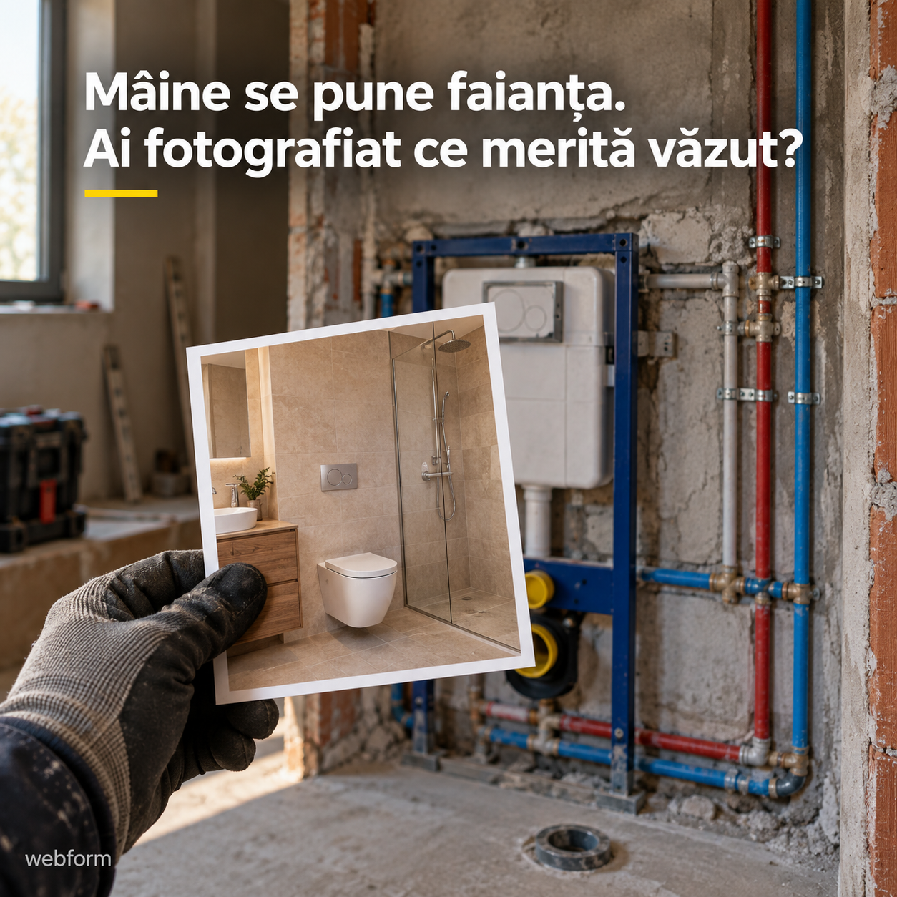
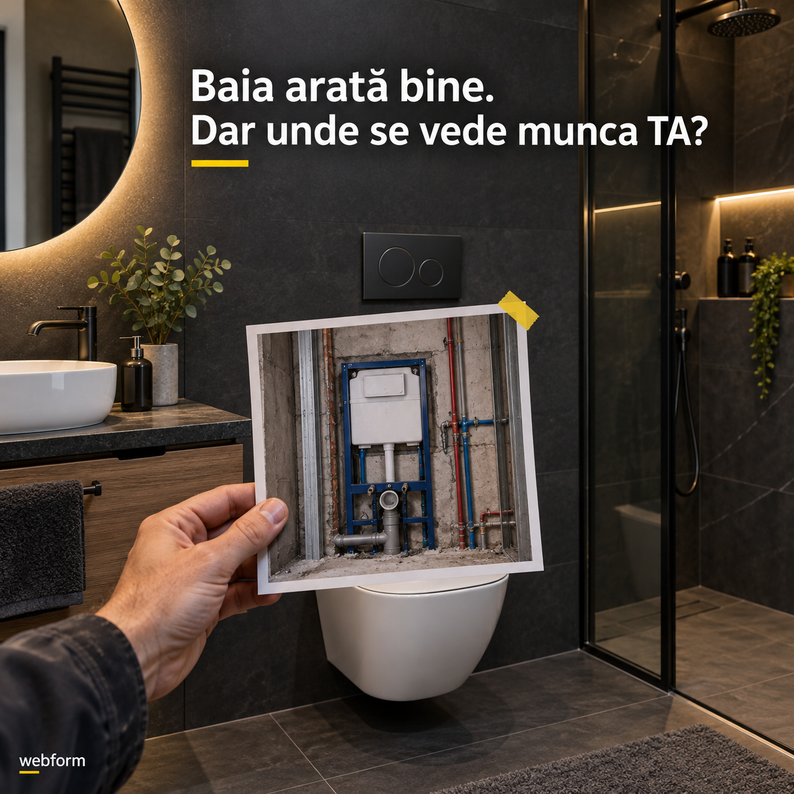
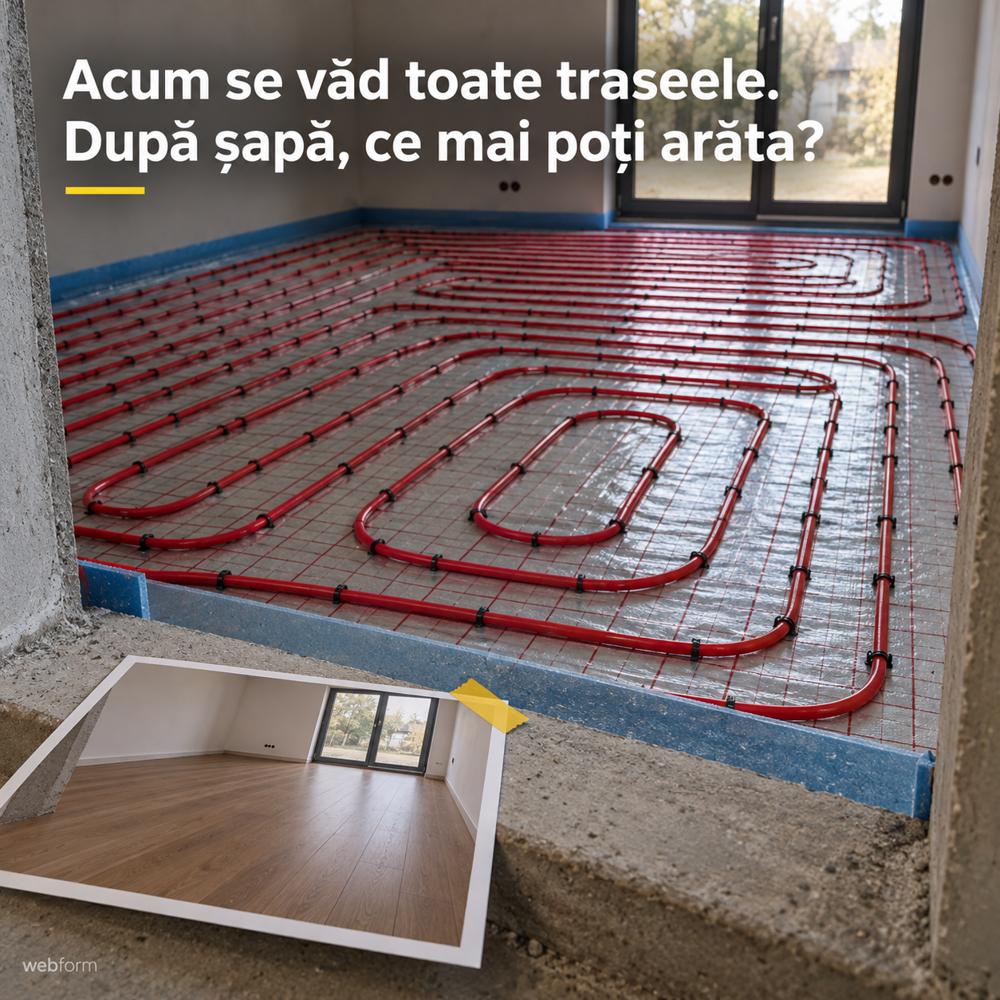
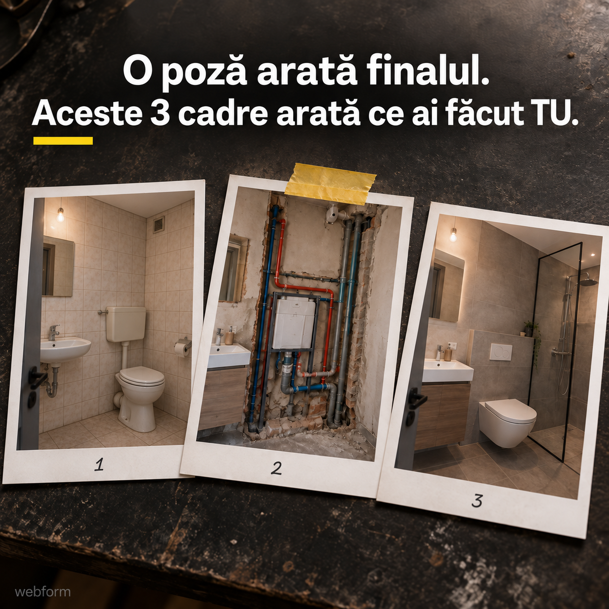
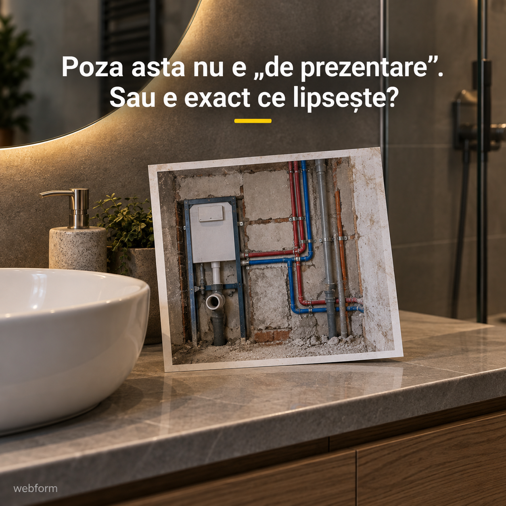
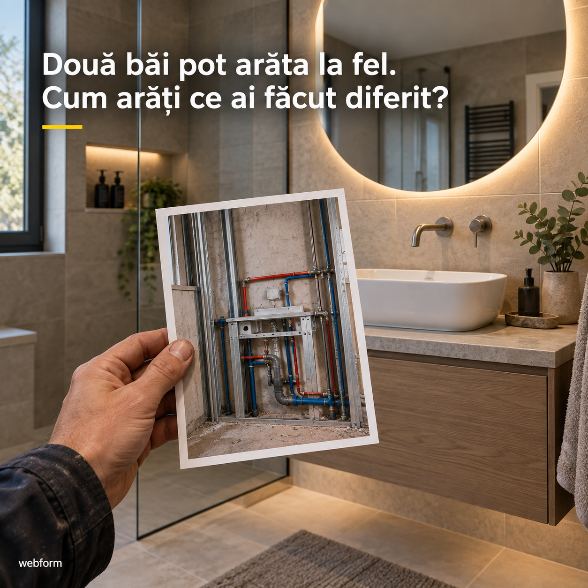
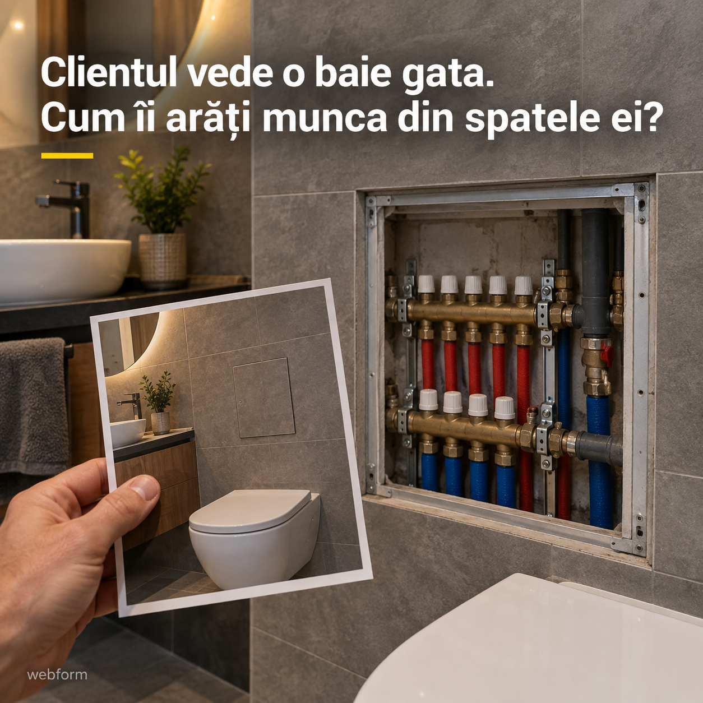
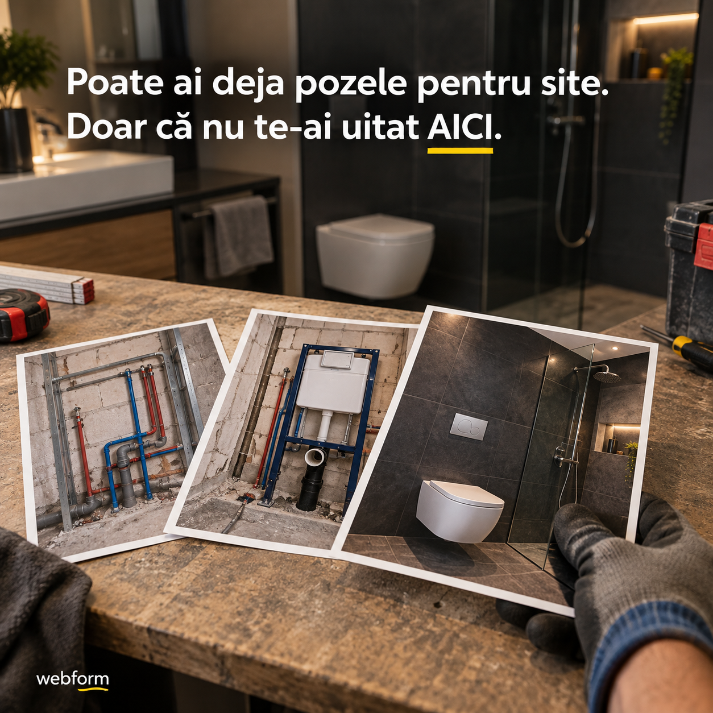

RECLAMA 01Descarcă imagineaPrimary textCopiazăMâine vine faianța. Azi încă se vede partea ta de lucrare. Traseele. Racordurile. Ordinea în care ai pregătit totul. După finisaje, clientul următor va vedea o baie frumoasă. Dar cum află ce ai făcut tu acolo? Păstrează o fotografie înainte să se închidă peretele. Apoi una cu rezultatul final. Împreună, pot explica o lucrare mai bine decât poza de la predare luată singură. Ai deja astfel de cadre în telefon? Tu ne povestești lucrarea. Noi scriem textele și o așezăm într-un site pe înțelesul celui care caută un instalator. Ne ocupăm și de administrare. Vezi site-ul înainte să decizi. Descoperă cum poate arăta online partea de meserie pe care finisajele o ascund.HeadlineCopiazăFotografia de făcut înainte să se acopere.DescriptionCopiazăMunca ascunsă poate deveni prezentarea ta.CTA: Află mai multe · ro.joinwebform.com
RECLAMA 02Descarcă imagineaPrimary textCopiazăO baie terminată arată multe. Mai puțin ce ai montat în spatele ei. În fotografie se văd plăcile, oglinda și obiectele sanitare. Traseele pe care le-ai pregătit au dispărut. De aceea, lângă imaginea finală merită să existe încă una: cea din timpul lucrării. Cu o explicație simplă despre ce ai realizat tu. Cine caută un instalator poate vedea astfel mai mult decât rezultatul de la suprafață. Trimite-ne fotografiile și povestește-ne lucrarea. La Webform, noi pregătim textele și paginile site-ului, apoi ne ocupăm și de administrare. Tu vezi site-ul înainte să decizi. Intră să descoperi cum pui în valoare munca pe care o baie terminată n-o mai arată.HeadlineCopiazăPoza care lipsește dintr-o baie terminată.DescriptionCopiazăArată și ce ai făcut înainte de finisaje.CTA: Află mai multe · ro.joinwebform.com
RECLAMA 03Descarcă imagineaPrimary textCopiazăÎnainte să se toarne șapa, podeaua spune o poveste pe care camera terminată n-o mai spune. Se văd traseele. Se vede suprafața pe care ai lucrat. Se vede o etapă întreagă din montaj. Mai târziu, în fotografie va apărea doar pardoseala. Fă loc ambelor imagini în prezentarea ta: etapa de lucru și rezultatul final. Lângă ele, explică ce ai făcut, fără să-l obligi pe viitorul client să cunoască termenii meseriei. Ai fotografii de la astfel de lucrări? Noi le organizăm într-un site pentru activitatea ta de instalator. Tu povestești, noi scriem textele, pregătim paginile și administrăm site-ul. Îl vezi înainte să decizi. Descoperă cum poate rămâne vizibilă munca pe care urmează s-o acopere șapa.HeadlineCopiazăCe acoperă șapa poate rămâne pe site.DescriptionCopiazăPăstrează povestea lucrării, nu doar finalul.CTA: Află mai multe · ro.joinwebform.com
RECLAMA 04Descarcă imagineaPrimary textCopiazăPoza de la final e doar ultima pagină a lucrării. Ce-ar fi să arăți și ce a fost înainte? Trei cadre sunt un punct bun de pornire: Cum arăta locul când ai început. Ce ai făcut în timpul montajului. Cum ai lăsat totul la final. Lângă fiecare, câteva rânduri despre partea ta de muncă. Așa, cine intră pe site poate urmări lucrarea fără să fi fost acolo și fără să te sune pentru fiecare explicație. Caută un proiect pe care l-ai fotografiat în mai multe etape. La Webform, îl transformăm într-o prezentare pentru viitorii tăi clienți. Scriem textele, pregătim site-ul și ne ocupăm de administrare. Tu vezi site-ul înainte să decizi. Descoperă ce poți construi din trei fotografii pe care poate le ai deja.HeadlineCopiazăLucrarea ta, în trei cadre care o explică.DescriptionCopiazăÎnceputul. Montajul. Rezultatul.CTA: Află mai multe · ro.joinwebform.com
RECLAMA 05Descarcă imagineaPrimary textCopiază„Îți dau numărul lui. A lucrat la mine.” Recomandarea a ajuns. Dar viitorul client încă n-a văzut ce știi să faci. Poți să-i trimiți și un loc în care găsește lucrările tale: fotografii, etape și explicații despre ce ai realizat. Inclusiv partea care nu se mai vede după finisaje. Omul poate privi singur. Poate înțelege ce tipuri de lucrări faci. Și are de unde începe discuția cu tine. Ai pozele, dar sunt împrăștiate prin telefon? Tu ni le trimiți și ne povestești lucrările. Noi le așezăm într-un site pentru activitatea ta de instalator, scriem textele și ne ocupăm de administrare. Vezi site-ul înainte să decizi. Descoperă ce poate însoți următoarea recomandare.HeadlineCopiazăCe poți trimite odată cu numărul tău.DescriptionCopiazăO recomandare însoțită de lucrările tale.CTA: Află mai multe · ro.joinwebform.com
RECLAMA 06Descarcă imagineaPrimary textCopiazăPraf pe jos. Peretele deschis. Instalația la vedere. Probabil nu aceasta e fotografia pe care ai alege-o prima pentru a-ți prezenta munca. Dar poate fi exact cadrul care explică ce ai făcut. Alături de poza de la final, arată o etapă pe care altfel clientul n-ar avea cum s-o vadă. Nu trebuie să fie o fotografie artistică. Trebuie să fie clară și să poți spune ce se întâmplă în ea. Mai ai prin telefon poze făcute înainte să se închidă pereții? De acolo putem începe site-ul tău. Tu povestești lucrările. Noi alegem împreună materialele, scriem textele și pregătim paginile. Ne ocupăm și de administrare. Vezi site-ul înainte să decizi. Descoperă cum pozele de șantier pot deveni o prezentare a meseriei tale.HeadlineCopiazăNu șterge încă poza din timpul montajului.DescriptionCopiazăLucrarea neterminată poate explica mai mult.CTA: Află mai multe · ro.joinwebform.com
RECLAMA 07Descarcă imagineaPrimary textCopiazăCând cineva privește doar baia terminată, e greu să afle cât din rezultat ține de munca ta. Ce ai găsit la început? Ce ai refăcut? Ce ai montat? Fotografiile din timpul lucrării, însoțite de explicații, pot răspunde acestor întrebări. Nu trebuie să compari munca ta cu a altcuiva. Arată concret propria lucrare. O imagine înainte de finisaje poate da context fotografiei finale și poate face prezentarea mai ușor de înțeles. La Webform, pornim de la pozele și povestea ta. Scriem textele și construim site-ul în care viitorul client poate vedea ce ai realizat. Ne ocupăm și de administrare. Tu vezi site-ul înainte să decizi. Descoperă cum arăți mai mult decât o baie frumoasă.HeadlineCopiazăDiferența poate fi în poza de dinainte.DescriptionCopiazăDă context lucrărilor pe care le prezinți.CTA: Află mai multe · ro.joinwebform.com
RECLAMA 08Descarcă imagineaPrimary textCopiazăAi terminat. Ai strâns sculele. Ai plecat la următoarea lucrare. Fotografiile au rămas în telefon. Dar lucrarea aceea poate avea un loc și în prezentarea ta, acolo unde o vede cineva care încă nu te cunoaște. Cu imaginea de la final și câteva cadre din timpul montajului. Cu o explicație despre ce ai realizat, spusă pe înțelesul clientului. Fără să reiei povestea de la zero la fiecare discuție. Ai o lucrare recentă de care ești mulțumit? Trimite-ne fotografiile și spune-ne ce ai făcut. Noi pregătim textele, construim site-ul și ne ocupăm de administrare. Tu îl vezi înainte să decizi. Descoperă cum poate continua să-ți prezinte meseria o lucrare pe care ai predat-o deja.HeadlineCopiazăCe rămâne de arătat după ce pleci.DescriptionCopiazăPune lucrările în locul unde pot fi văzute.CTA: Află mai multe · ro.joinwebform.com
RECLAMA 09Descarcă imagineaPrimary textCopiazăTu știi câte etape au fost până la fotografia finală. Omul care o vede pentru prima dată, nu. De aceea merită să păstrezi și cadre din timpul lucrării: locul de la început, montajul și detaliile pe care le-ai pregătit înainte de finisaje. Lângă ele, explică ce ai realizat. Fotografiile nu înlocuiesc discuția despre o lucrare nouă. Dar pot arăta ce înseamnă, în practică, serviciile tale. Ai deja materiale de la proiectele terminate? La Webform, le organizăm într-un site pentru activitatea ta de instalator. Tu ne spui povestea, noi scriem textele și pregătim paginile. Ne ocupăm și de administrare. Tu vezi site-ul înainte să decizi. Descoperă cum faci vizibile etapele pe care o poză de la final le ascunde.HeadlineCopiazăArată etapele pe care finalul le ascunde.DescriptionCopiazăMai mult context pentru următoarea discuție.CTA: Află mai multe · ro.joinwebform.com
RECLAMA 10Descarcă imagineaPrimary textCopiazăNu începe cu „n-am ce să pun pe site”. Începe cu fotografiile făcute în timpul lucrărilor. Baia înainte să se închidă pereții. Traseele înainte de șapă. Montajul înainte de finisaje. Apoi caută și fotografiile de la final. Poate ai deja mai mult material decât credeai. Lipsește doar ordinea și explicația care le leagă. Alege o lucrare și spune-ne ce ai făcut acolo. Noi scriem textele și punem fotografiile într-un site pe care îl poate înțelege cineva care caută un instalator. Pregătim paginile și ne ocupăm și de administrare. Tu vezi site-ul înainte să decizi. Descoperă cum pot deveni pozele din telefon o prezentare a lucrărilor tale.HeadlineCopiazăViitorul tău site poate începe în telefon.DescriptionCopiazăCaută lucrările fotografiate pe etape.CTA: Află mai multe · ro.joinwebform.com